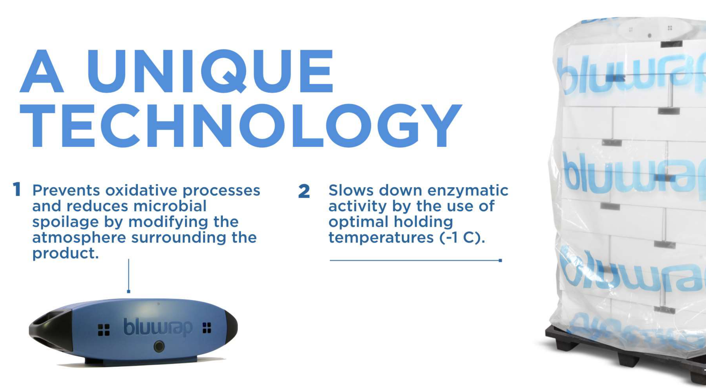
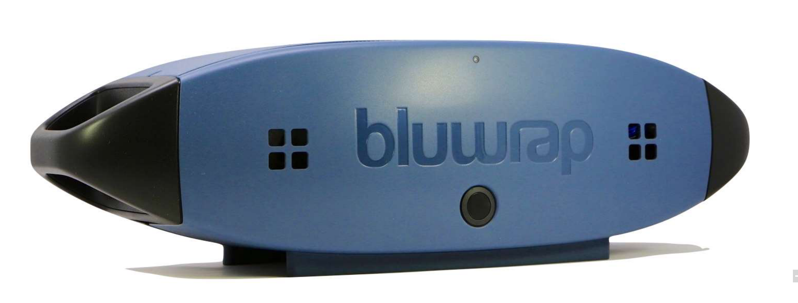

Intro
The Company
BluWrap is a San Francisco-based company in the food-tech industry. Its mission is to increase the shelf life for commercial fresh protein shipments, thereby reducing the environmental impact, cost, and waste generation of these operations. The company achieves these improvements in food preservation via its proprietary atmospheric control technology.
The Challenge
When I first engaged with BluWrap in 2015, the company had a first generation design that was functional and deployed in the field to pilot customers. But the existing design had several shortcomings. It consisted of the functional internal components inside of a rugged off-the-shelf black container. So there was no brand association with BluWrap as a company. The units were also large and unwieldy, making day-to-day operations cumbersome and inefficient.
My Role
I served as Project Lead and mechanical engineer for this project. As Project Lead, I was responsible for the following:
- Developing a deep understanding of BluWrap, its product, and its user workflow
- Creating and refining the product requirements document for the second generation product
- Directing and prioritizing activities for the development team, which consisted of several industrial designers, one software engineer, one product manager, and me
- Communicating with the client about project progress with respect to milestones and budget
The Solution
Ultimately, the solution we developed met the main business objectives of the client. Most notably:
- We created a signature design (known as BluBuoy) that enabled customers to make an association between BluWrap and its product
- The new buoy design was less than 1/2 the size of the previous generation's design
Below are some images of the functional BluBuoy prototypes I produced. I designed the external plastic parts for standard and gas-assist injection molding. The internal design consisted of a custom sheet metal chassis, custom PCBAs, and additional proprietary components.


The Results
The buoy's small form factor made handling much easier for warehouse operators. Units could now be more stably stacked for charging and occupied much less space in the building. The second generation design also enabled more boxes of protein to be packed onto a stacked pallet, resulting in improved packing efficiency for each shipment.
Below is an image of the final product as it is manufactured today.
